Las Aplicaciones de la Derivada y el Cálculo
En este ensayo, que destaca por su claridad y estructura, exploraremos la relevancia y el uso del cálculo integral en las distintas ramas de la ingeniería. A primera vista, las fórmulas y procedimientos del cálculo pueden parecer intimidantes, pero su comprensión es fundamental. No solo por su innegable utilidad, sino también por su necesidad intrínseca, la aplicación del cálculo y las derivadas en diversas disciplinas es de suma importancia. Permite a los ingenieros abordar desafíos complejos y concebir sistemas de alto rendimiento. Esta aplicación se manifiesta en múltiples aspectos de la ingeniería, desde el diseño de sistemas de frenos en la ingeniería mecánica hasta la modelización de redes eléctricas en la ingeniería eléctrica, y la optimización de procesos en la ingeniería industrial.
Además, en la ingeniería química, el cálculo integral es crucial para el diseño de reactores y la gestión de la dinámica de fluidos. En la ingeniería de sistemas, su utilidad se extiende al desarrollo de software, donde facilita la creación de algoritmos complejos y el análisis de datos.
Objetivo
El propósito central de este ensayo de investigación es sumergirse en el papel esencial que desempeña el cálculo integral dentro del ámbito de la ingeniería. A través de un análisis profundo de conceptos, aplicaciones y ejemplos, nuestro objetivo es comprender cómo esta rama matemática se aplica de manera efectiva para resolver problemas del mundo real y optimizar procesos en diversas disciplinas ingenieriles.
Determinamos el método de integración adecuado y aplicamos correctamente el método de integración, para finalizar, solo analizamos el resultado obtenido.
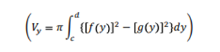
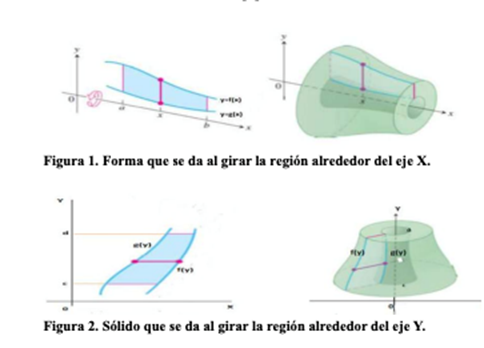
Cálculo de áreas y volumen
Examinaremos cómo las técnicas de optimización basadas en integrales se aplican en el cálculo de áreas y volúmenes para trabajos de ingeniería para maximizar la eficiencia, minimizar costos y mejorar el rendimiento de sistemas y procesos.
Cálculo de Área
La integral definida generaliza el cálculo de áreas. A diferencia del área de un recinto, que siempre es positiva, la integral puede ser positiva, negativa o nula. Al aplicarla al cálculo de áreas, consideramos el signo de los recintos limitados por el eje X y tomamos el valor absoluto. La suma de estos valores representa el área total.
Además, podemos extender la integral definida para calcular el área entre dos curvas. El teorema correspondiente establece que la integral de la diferencia entre las funciones que definen las curvas nos da el área de esa región.
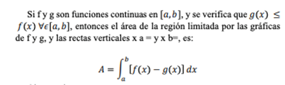
Observaciones
a) Es importante darse cuenta de que la validez de la formula del área depende solo de que f y g sean continuas y de que g(x)≤f(x).
b) Las gráficas de f y g pueden estar situadas de cualquier manera respecto al eje OX.
c) Como suele ocurrir, unas veces se cumple que g(x) ≤ f(x) y otras veces que f(x) ≤ g(x), entonces el área de la región comprendida entre f y g sobre el intervalo [𝑎𝑎, 𝑏𝑏], viene dado por la formula:
Cálculo del coeficiente de transferencia de calor
El cálculo del coeficiente de transferencia de calor depende del modo de transferencia de calor y del sistema en consideración.
Conducción: En la transferencia de calor por conducción, se aplica la ley de Fourier para determinar el coeficiente de transferencia de calor. La ecuación es la siguiente:
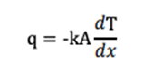
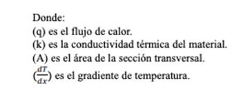
Convección
Para la transferencia de calor por convección, se pueden utilizar correlaciones experimentales o basadas en condiciones de flujo y propiedades del fluido. Estas correlaciones relacionan el coeficiente de transferencia de calor con parámetros como el número de Reynolds, el número de Prandtl y el número de Nusselt.
Radiación
En la transferencia de calor por radiación, el coeficiente de transferencia de calor depende de la emisividad de las superficies y la constante de StefanBoltzmann. El cálculo implica ecuaciones complejas que consideran la geometría, la temperatura y las propiedades de las superficies radiantes.
Calcular el coeficiente de transferencia de calor con precisión es esencial para analizar problemas de transferencia de calor y diseñar sistemas eficientes. Permite a ingenieros y científicos optimizar procesos, mejorar la eficiencia energética y garantizar el buen funcionamiento de diversas aplicaciones.
Capacidad de carga de un ecosistema
Dentro de la biología, podemos observar el uso de límites y continuidad para modelar el comportamiento de las poblaciones cuando se encuentran cerca de un punto crítico también conocido como capacidad de carga de un ecosistema.
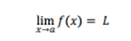
Por ejemplo, Imagina que tenemos una población cuyo tamaño cambia con el tiempo.
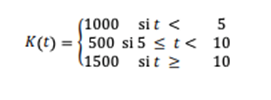
Cómo el cálculo integral se aplica en el análisis y la solución de problemas en áreas como la mecánica, la electrónica, la civil y la industrial.
Profundizar en la relevancia del cálculo diferencial e integral en la ingeniería industrial y cómo se emplea para optimizar procesos y tomar decisiones.
El cálculo integral
El cálculo integral, una subdisciplina de las matemáticas, se dedica a la integración de funciones. Su aplicación es amplia y variada, abarcando el cálculo de áreas, volúmenes, longitudes, tasas de cambio, entre otros conceptos matemáticos. En esencia, el cálculo integral permite determinar la suma precisa de una función entre dos valores específicos. Esta rama del cálculo es fundamental en la resolución de problemas en campos como la física, la ingeniería y la economía. Por ejemplo, puede emplearse para anticipar el comportamiento de sistemas físicos, analizar el movimiento de cuerpos celestes y calcular integrales de funciones complejas.
Por otro lado, las derivadas son una herramienta matemática que expresa la tasa de cambio instantáneo de una función en un punto dado. En términos más sencillos, la derivada de una función en un punto determinado corresponde a la pendiente de la línea tangente al gráfico de la función en ese punto. Las derivadas tienen aplicaciones en diversas disciplinas, como la física, la mecánica, la biología, la medicina y la economía. Un ejemplo de su uso en ingeniería sería calcular cómo varía la temperatura en un tubo a medida que la presión aumenta.
Análisis de Sistemas Dinámicos
Investigaremos cómo el cálculo integral se utiliza para describir y predecir el comportamiento de sistemas dinámicos, como circuitos eléctricos, sistemas mecánicos y procesos químicos.
Cálculo del volumen de un sólido en revolución
Primero identificamos el eje alrededor del cual gira la región, selección y elaboración correcta de la integral para calcular dicho volumen.
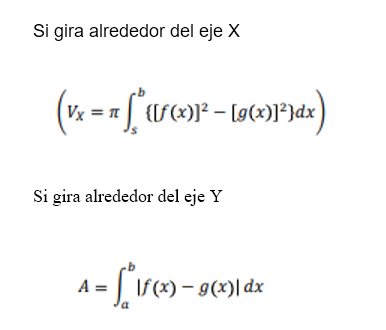
Cálculo de volúmenes
El uso de integrales en el cálculo de volúmenes es una técnica avanzada en matemáticas que nos permite determinar el volumen de objetos tridimensionales irregulares. Al aplicar la integración, podemos calcular con precisión el espacio contenido dentro de una superficie curva en el espacio tridimensional.
Además de su aplicación en el cálculo de áreas, las integrales también son útiles para encontrar el volumen de sólidos tridimensionales. Por ejemplo, cuando una región en un plano gira alrededor de un eje, se crea un sólido de revolución. Estos sólidos son comunes en ingeniería y procesos de producción, algunos ejemplos incluyen: ejes, embudos, pilares, botellas y émbolos.
Para calcular el volumen de un sólido de revolución utilizando el método del disco, consideramos una función continua f(x) definida en el intervalo [𝑎𝑎, 𝑏𝑏]. La gráfica de esta función determina un recinto (R) entre las rectas (x = a), (x = b), y (y = 0). Si giramos este recinto alrededor del eje (x), obtenemos un sólido de revolución.
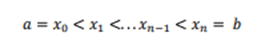
Estas divisiones definen un sólido (n) cuya suma se aproxima al volumen total. Considerando que el volumen de un disco 𝜋𝜋𝑟𝑟2ℎ, es la suma de Riemann asociada a la partición proporciona una estimación aproximada del volumen del sólido.
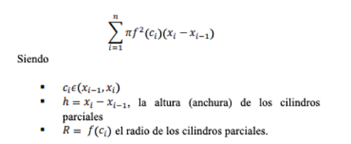
Si el número de cilindros parciales aumenta, su suma se aproxima cada vez más al volumen del solido; es decir:
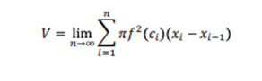
Transferencia de Calor y Masa
La transferencia de calor y masa es un campo esencial en la ingeniería y la física. Se ocupa de cómo la energía térmica y las sustancias se desplazan de un lugar a otro. Su relevancia abarca desde el diseño de sistemas térmicos hasta la optimización de procesos industriales. Además, se aplica en áreas como la ingeniería ambiental, la biología, la medicina y la síntesis química.
Esta función representa un ecosistema que puede soportar 1000 individuos hasta el tiempo t=5, luego debido a un desastre natural la capacidad de carga se reduce a 500 individuos para el intervalo de tiempo 5 ≤ t = 10. A partir del tiempo t=10, la capacidad de carga se recupera y aumenta a 1500 individuos.
Para analizar la continuidad de esta función, podemos observar que hay discontinuidades en t=5 y t=10. Esto se debe a que el valor de la función salta en estos puntos.
En cuanto a los límites, podemos calcular los límites de la función en los puntos de discontinuidad. Por ejemplo, el límite de K(t) cuando t se acerca a 5 desde la izquierda es 1000.
Autor del artículo
(Adrian, 2020)
Bibliografía
◈ A. Beléndez, J. B. (1998). Universidad de Alicante. Recuperado el 20 de 03 de 2025, de rua.ua.es: https://rua.ua.es/dspace/bitstream/10045/11355/3/Campos_esc_y_vect.pdf
◈ Plata, U. N. (s.f.). UNLP. Recuperado el 20 de 03 de 2025, de https://unlp.edu.ar/: https://www.mate.unlp.edu.ar/practicas/114_8_16062015111652.pdf
◈ Almeria, U. d. (s.f.). UAL. Recuperado el 20 de 03 de 2025, de ual.es: https://w3.ual.es/~plopez/docencia/ita/EVA_trasptema9
◈ Luz Juliana López López, R. E. (2023). Universidad de las Regiones Autómatas de la Costa Caribe Nicaraguense. Recuperado el 25 de 03 de 2025, de ceimm.uraccan.edu.ni: http://ceimm.uraccan.edu.ni/index.php/CEI-Interculturalidad/article/view/1176/4378
◈ Adrian, C. A. (2020). Facultad de Ciencias e Ingeniería, Universidad Estatal de Milagro, Ecuador. Recuperado el 21 de 03 de 2025, de unemi.edu.ec: https://d1wqtxts1xzle7.cloudfront.net/115056761/Ensayo_Calculo_DC.-libre.pdf?1716237976=&response-content-disposition=inline%3B+filename%3DEnsayo_Calculo_DC.pdf&Expires=1742431879&Signature=RuyTatjtGM415dmqHlZRkKk5v0P4x1EZRoGOXCoAMXCRZT38Ae37MLRcpQ4uReI7v